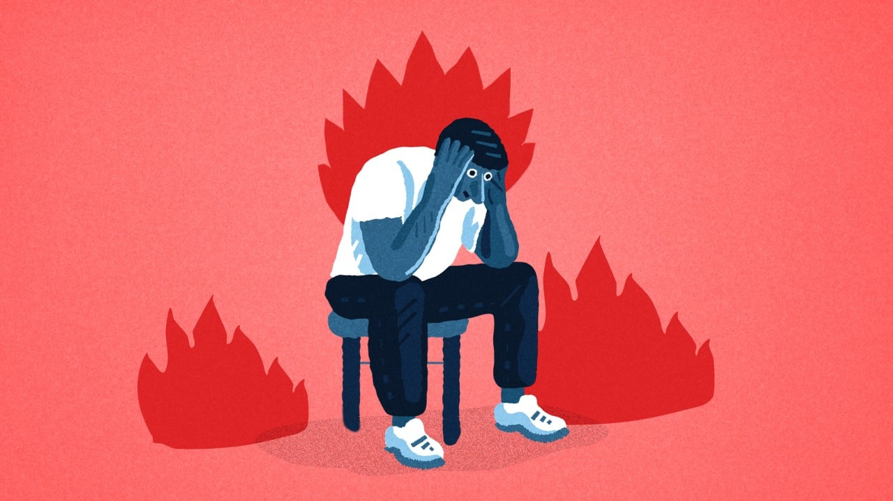

“Are you ok?” is a question many of us are familiar with hearing around this time each year (Are you ok day). However many people like myself just say “I’m Fine”. Well, that just means you’re all good then right? Often that’s not the case but someone just asking is the beginning at least. Everyone talks about being able to ask someone if they are ok and being able to notice the signs. This is a key part and I would highly recommend looking at the signs that someone is not ok and how to ask if you haven’t already. (Link) Being able to open up and understand that it is ok not to be ok is a tough thing to do. Be real with yourself just for a minute and think are you ok? It’s one thing to brush off others and saying you’re ok and that you’re fine. But it’s much harder to lie to yourself. A great list of questions to ask yourself and be honest with yourself is listed here. Once you acknowledge your own issues it makes it easier to seek help and make changes. Just to be clear I am no professional in this field but I have found this advice has helped me personally and many others around me. Particularly in male culture, it’s often seen that expressing your emotions and personal difficulties is a sign of weakness. Being conditioned by media and their own fathers that you cannot show the slighest hint of sadness without being weak. This couldn’t be further from the truth in this day and age. We are lucky to live in a society that now values mental health more and more than ever. “Talking about your feelings isn’t a sign of weakness. It’s part of taking charge of your wellbeing and doing what you can to stay healthy.” — Mental Health.org.uk I personally have always struggled to talk about any of my thoughts and emotions with anyone. But once you do it does slowly become easier and does help, and often you will find out you’re not alone. You’re not the only one that feels that way. Being able to talk to yourself about how you feel is the first step to talking to others about how you feel. This may sound all self-explanatory but to many people, it’s not. I hope this may help someone who reads this and encourages you to ask yourself if you’re ok and reach out and pay close attention to others around you. If you are struggling with anything I encourage you to reach out to someone; whether they are your friend, parent, colleague, partner or neighbour. The first step is talking about it. I hope this has helped you, informed you or at least made you think a little about mental health. Look out for those around you and be real with yourself. Are you ok?
I'm Fine.
by Alex Leybourne
